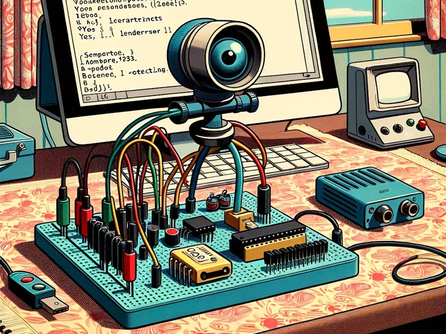
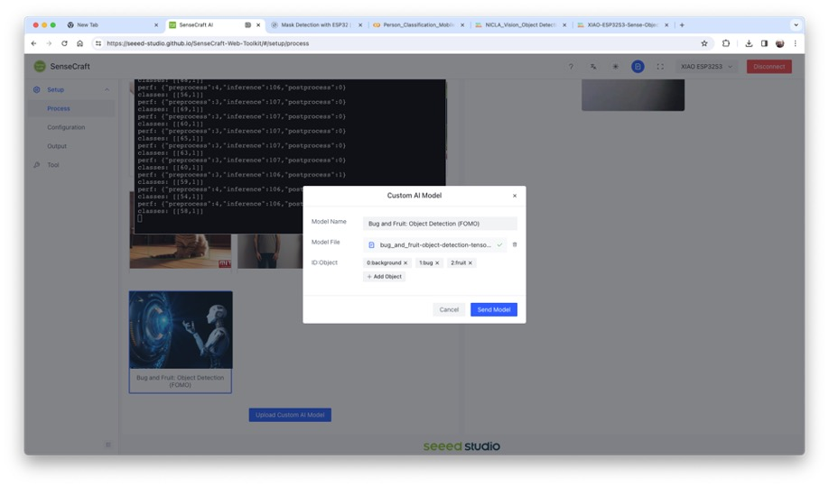
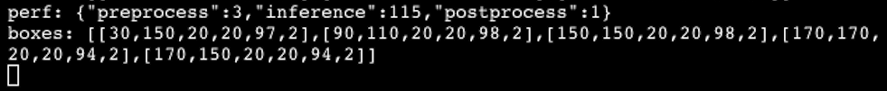
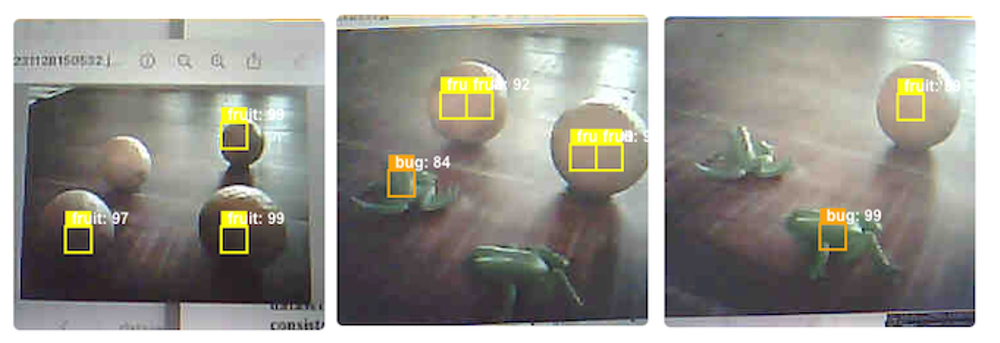

Rilevamento degli Oggetti

Panoramica
Nell’ultima sezione riguardante Computer Vision (CV) e XIAO ESP32S3, Classificazione delle immagini, abbiamo imparato come impostare e classificare le immagini con questa straordinaria scheda di sviluppo. Continuando il nostro viaggio con CV, esploreremo il Rilevamento degli oggetti sui microcontrollori.
Object Detection e Image Classification
Il compito principale con i modelli di Classificazione delle immagini è identificare la categoria di oggetti più probabile presente su un’immagine, ad esempio, per classificare tra un gatto o un cane, gli “oggetti” dominanti in un’immagine:

Ma cosa succede se non c’è una categoria dominante nell’immagine?

Un modello di classificazione delle immagini identifica l’immagine soprastante in modo completamente sbagliato come un “ashcan”, probabilmente a causa delle tonalità di colore.
Il modello utilizzato nelle immagini precedenti è MobileNet, che è addestrato con un ampio set di dati, ImageNet, in esecuzione su un Raspberry Pi.
Per risolvere questo problema, abbiamo bisogno di un altro tipo di modello, in cui non solo possono essere trovate più categorie (o etichette), ma anche dove si trovano gli oggetti in una determinata immagine.
Come possiamo immaginare, tali modelli sono molto più complicati e più grandi, ad esempio, MobileNetV2 SSD FPN-Lite 320x320, addestrato con il set di dati COCO. Questo modello di rilevamento degli oggetti pre-addestrato è progettato per individuare fino a 10 oggetti all’interno di un’immagine, generando un riquadro di delimitazione per ogni oggetto rilevato. L’immagine sottostante è il risultato di un tale modello in esecuzione su un Raspberry Pi:

I modelli utilizzati per il rilevamento di oggetti (come MobileNet SSD o YOLO) hanno solitamente dimensioni di diversi MB, il che è OK per l’uso con Raspberry Pi ma non è adatto per l’uso con dispositivi embedded, dove la RAM di solito ha, al massimo, pochi MB come nel caso di XIAO ESP32S3.
Una soluzione innovativa per il Rilevamento di Oggetti: FOMO
Edge Impulse ha lanciato nel 2022, FOMO (Faster Objects, More Objects), una nuova soluzione per eseguire il rilevamento di oggetti su dispositivi embedded, come Nicla Vision e Portenta (Cortex M7), su CPU Cortex M4F (serie Arduino Nano33 e OpenMV M4) e sui dispositivi Espressif ESP32 (ESP-CAM, ESP-EYE e XIAO ESP32S3 Sense).
In questo progetto pratico, esploreremo l’Object Detection utilizzando FOMO.
Per saperne di più sulla FOMO, si può leggere l’annuncio ufficiale su FOMO di Edge Impulse, dove Louis Moreau e Mat Kelcey spiegano in dettaglio come funziona.
Obiettivo del Progetto di Object Detection
Tutti i progetti di apprendimento automatico devono iniziare con un obiettivo dettagliato. Supponiamo di trovarci in una struttura industriale o rurale e di dover smistare e contare arance (frutti) e in particolare rane (insetti).

In altre parole, dovremmo eseguire una classificazione multi-etichetta, in cui ogni immagine può avere tre classi:
- Background [Sfondo] (nessun oggetto)
- Fruit
- Bug
Ecco alcuni esempi di immagini non etichettate che dovremmo utilizzare per rilevare gli oggetti (frutti e insetti):

Siamo interessati a quale oggetto è presente nell’immagine, alla sua posizione (centroide) e a quanti ne possiamo trovare su di essa. La dimensione dell’oggetto non viene rilevata con FOMO, come con MobileNet SSD o YOLO, in cui il Bounding Box è uno degli output del modello.
Svilupperemo il progetto utilizzando XIAO ESP32S3 per l’acquisizione di immagini e l’inferenza del modello. Il progetto ML verrà sviluppato utilizzando Edge Impulse Studio. Ma prima di iniziare il progetto di “object detection” in Studio, creiamo un dataset grezzo (non etichettato) con immagini che contengono gli oggetti da rilevare.
Raccolta Dati
Si possono catturare immagini usando XIAO, il telefono o altri dispositivi. Qui, useremo XIAO con codice dalla libreria Arduino IDE ESP32.
Raccolta di Dataset con XIAO ESP32S3
Aprire Arduino IDE e selezionare la scheda XIAO_ESP32S3 (e la porta a cui è collegata). Su File > Examples > ESP32 > Camera, selezionare CameraWebServer.
Nel pannello BOARDS MANAGER, confermare di aver installato l’ultimo pacchetto “stable”.
⚠️ Attenzione
Le versioni Alpha (ad esempio, 3.x-alpha) non funzionano correttamente con XIAO ed Edge Impulse. Utilizzare invece l’ultima versione stabile (ad esempio, 2.0.11).
Si devono anche commentare tutti i modelli di fotocamere, eccetto i pin del modello XIAO:
#define CAMERA_MODEL_XIAO_ESP32S3 // Has PSRAM
E su Tools, abilitare la PSRAM. Inserisci le credenziali wifi e caricare il codice sul dispositivo:

Se il codice viene eseguito correttamente, si vedrà l’indirizzo sul monitor seriale:

Copiare l’indirizzo sul browser e attendere che la pagina venga caricata. Selezionare la risoluzione della telecamera (ad esempio, QVGA) e selezionare [START STREAM]. Attendi qualche secondo/minuto, a seconda della connessione. Si può salvare un’immagine nell’area download del computer usando il pulsante [Save].

Edge impulse suggerisce che gli oggetti dovrebbero essere simili per dimensione e non sovrapposti per prestazioni migliori. Questo va bene in una struttura industriale, dove la telecamera dovrebbe essere fissa, mantenendo la stessa distanza dagli oggetti da rilevare. Nonostante ciò, proveremo anche a usare dimensioni e posizioni miste per vedere il risultato.
Non abbiamo bisogno di creare cartelle separate per le nostre immagini perché ognuna contiene più etichette.
Suggeriamo di usare circa 50 immagini per mescolare gli oggetti e variare il numero di ciascuno che appare sulla scena. Provare ad acquisire con diverse angolazioni, sfondi e condizioni di luce.
Le immagini archiviate usano una dimensione del frame QVGA di 320x240 e RGB565 (formato pixel colore).
Dopo aver acquisito il dataset, [Stop Stream] e spostare le immagini in una cartella.
Edge Impulse Studio
Setup del progetto
Si va su Edge Impulse Studio, si inseriscono le proprie credenziali in Login (o si crea un account) e si avvia un nuovo progetto.

Qui, è possibile clonare il progetto sviluppato per questa esercitazione pratica: XIAO-ESP32S3-Sense-Object_Detection
Nella dashboard del progetto, andare in basso e su Project info e selezionare Bounding boxes (object detection) e Espressif ESP-EYE (il più simile alla nostra scheda) come Target Device:

Caricamento dei dati non etichettati
In Studio, si va alla scheda Data acquisition e nella sezione UPLOAD DATA caricare i file acquisiti come cartella dal computer.

Si può lasciare che Studio divida automaticamente i dati tra “Train” e “Test” o farlo manualmente. Caricheremo tutti come training.

Tutte le immagini non etichettate (47) sono state caricate, ma devono essere etichettate in modo appropriato prima di essere utilizzate come dataset del progetto. Studio ha uno strumento per questo scopo, che che si trova nel link Labeling queue (47).
Ci sono due modi per eseguire l’etichettatura assistita dall’IA su Edge Impulse Studio (versione gratuita):
- Utilizzando yolov5
- Tracciando di oggetti tra i frame
Edge Impulse ha lanciato una funzione di auto-labeling per i clienti Enterprise, semplificando le attività di etichettatura nei progetti di rilevamento degli oggetti.
Gli oggetti ordinari possono essere rapidamente identificati ed etichettati utilizzando una libreria esistente di modelli di rilevamento degli oggetti pre-addestrati da YOLOv5 (addestrati con il set di dati COCO). Ma poiché, nel nostro caso, gli oggetti non fanno parte dei dataset COCO, dovremmo selezionare l’opzione di “tracking” [tracciamento] degli oggetti. Con questa opzione, una volta disegnati i bounding box ed etichettate le immagini in un frame, gli oggetti verranno tracciati automaticamente da un frame all’altro, etichettando partially quelli nuovi (non tutti sono etichettati correttamente).
Si può usare EI uploader per importare i dati se si ha già un dataset etichettato contenente dei “bounding box”.
Etichettatura del Dataset
Iniziando dalla prima immagine dei dati non etichettati, si usa il mouse per trascinare una casella attorno a un oggetto per aggiungere un’etichetta. Poi si clicca su Save labels per passare all’elemento successivo.

Si continua con questo processo finché la coda non è vuota. Alla fine, tutte le immagini dovrebbero avere gli oggetti etichettati come i campioni sottostanti:

Poi, si esaminano i campioni etichettati nella scheda Data acquisition. Se una delle etichette è errata, la si può modificarla utilizzando il menù tre puntini dopo il nome del campione:

Si verrà guidati a sostituire l’etichetta errata e a correggere il dataset.

Bilanciamento del dataset e suddivisione Train/Test
Dopo aver etichettato tutti i dati, ci siamo resi conto che la classe fruit aveva molti più campioni di bug. Quindi, sono state raccolte 11 immagini di bug nuove e aggiuntive (per un totale di 58 immagini). Dopo averle etichettate, è il momento di selezionare alcune immagini e spostarle nel dataset di test. Per farlo si usa il menù a tre punti dopo il nome dell’immagine. Sono state selezionate sei immagini, che rappresentano il 13% del set di dati totale.

Impulse Design
In questa fase, si deve definire come:
- Il Pre-processing consiste nel ridimensionare le singole immagini da 320 x 240 a 96 x 96 e nel ridurle (forma quadrata, senza ritaglio). In seguito, le immagini vengono convertite da RGB a scala di grigi.
- Design a Model, in questo caso, “Object Detection”.

Pre-elaborazione di tutti i dataset
In questa sezione, selezionare Color depth come Grayscale, adatta per l’uso con modelli FOMO ed eseguire il “Save” dei parametri.

Studio passa automaticamente alla sezione successiva, “Generate features”, in cui tutti i campioni verranno pre-elaborati, generando un set di dati con singole immagini 96x96x1 o 9.216 feature.

L’esploratore di feature mostra che tutti i campioni evidenziano una buona separazione dopo la generazione delle feature.
Alcuni campioni sembrano stare nello spazio sbagliato, ma cliccandoci sopra si conferma la corretta etichettatura.
Progettazione, Addestramento e Test del Modello
Useremo FOMO, un modello di rilevamento degli oggetti basato su MobileNetV2 (alpha 0.35) progettato per segmentare grossolanamente un’immagine in una griglia di background rispetto a oggetti di interesse (in questo caso, scatole e ruote).
FOMO è un modello di apprendimento automatico innovativo per il rilevamento degli oggetti, che può utilizzare fino a 30 volte meno energia e memoria rispetto ai modelli tradizionali come Mobilenet SSD e YOLOv5. FOMO può funzionare su microcontrollori con meno di 200 KB di RAM. Il motivo principale per cui ciò è possibile è che mentre altri modelli calcolano le dimensioni dell’oggetto disegnando un quadrato attorno ad esso (bounding box), FOMO ignora le dimensioni dell’immagine, fornendo solo le informazioni su dove si trova l’oggetto nell’immagine tramite le sue coordinate del centroide.
Come funziona FOMO?
FOMO prende l’immagine in scala di grigi e la divide in blocchi di pixel usando un fattore di 8. Per l’input di 96x96, la griglia è 12x12 (96/8=12). Successivamente, FOMO eseguirà un classificatore attraverso ogni blocco di pixel per calcolare la probabilità che ci sia un box o una ruota in ognuno di essi e, successivamente, determinerà le regioni che hanno la più alta probabilità di contenere l’oggetto (se un blocco di pixel non ha oggetti, verrà classificato come background). Dalla sovrapposizione della regione finale, FOMO fornisce le coordinate (relative alle dimensioni dell’immagine) del centroide di questa regione.

Per l’addestramento, dovremmo selezionare un modello pre-addestrato. Usiamo FOMO (Faster Objects, More Objects) MobileNetV2 0.35. Questo modello utilizza circa 250 KB di RAM e 80 KB di ROM (Flash), che si adatta bene alla nostra scheda.

Per quanto riguarda gli iperparametri di training, il modello verrà addestrato con:
- Epochs: 60
- Batch size: 32
- Learning Rate: 0.001.
Per la convalida durante l’addestramento, il 20% del set di dati (validation_dataset) verrà risparmiato. Per il restante 80% (train_dataset), applicheremo il “Data Augmentation”, che capovolgerà casualmente, cambierà le dimensioni e la luminosità dell’immagine e le ritaglierà, aumentando artificialmente il numero di campioni sul set di dati per l’addestramento.
Di conseguenza, il modello termina con un punteggio F1 complessivo dell’85%, simile al risultato ottenuto utilizzando i dati di prova (83%).
Notare che FOMO ha aggiunto automaticamente una terza etichetta di background [sfondo] ai due precedentemente definiti (box e wheel).

Nelle attività di rilevamento di oggetti, l’accuratezza non è in genere la metrica di valutazione primaria. Il rilevamento di oggetti comporta la classificazione degli oggetti e la definizione di riquadri di delimitazione attorno a essi, il che lo rende un problema più complesso della semplice classificazione. Il problema è che non abbiamo il riquadro di delimitazione, solo i centroidi. In breve, usare l’accuratezza come metrica potrebbe essere fuorviante e potrebbe non fornire una comprensione completa delle prestazioni del modello. Per questo motivo, useremo il punteggio F1.
Modello di test con “Live Classification”
Una volta addestrato il nostro modello, possiamo testarlo utilizzando lo strumento Live Classification. Nella sezione corrispondente, cliccare sull’icona “Connect a development board” (una piccola MCU) e scansionare il codice QR col telefono.

Una volta connesso, si può usare lo smartphone per catturare immagini reali da testare col modello addestrato su Edge Impulse Studio.

Una cosa da notare è che il modello può produrre falsi positivi e falsi negativi. Questo può essere ridotto al minimo definendo una “Confidence Threshold” appropriata (usare il menù “Tre puntini” per la configurazione). Provare con 0,8 o più.
Deploying del Modello (Arduino IDE)
Selezionare la Libreria Arduino e il modello Quantized (int8), abilitare il compilatore EON nella scheda Deploy e premere [Build].

Apri l’Arduino IDE e, in Sketch, andare su Include Library e aggiungere .ZIP Library. Selezionare il file che scaricato da Edge Impulse Studio e il gioco è fatto!

Nella scheda Examples su Arduino IDE, si trova il codice di uno sketch (esp32 > esp32_camera) sotto il nome del progetto.

Si devono cambiare le righe dalla 32 alla 75, che definiscono il modello e i pin della telecamera, utilizzando i dati relativi al nostro modello. Copiare e incollare le righe seguenti, sostituendo le righe 32-75:
#define PWDN_GPIO_NUM -1
#define RESET_GPIO_NUM -1
#define XCLK_GPIO_NUM 10
#define SIOD_GPIO_NUM 40
#define SIOC_GPIO_NUM 39
#define Y9_GPIO_NUM 48
#define Y8_GPIO_NUM 11
#define Y7_GPIO_NUM 12
#define Y6_GPIO_NUM 14
#define Y5_GPIO_NUM 16
#define Y4_GPIO_NUM 18
#define Y3_GPIO_NUM 17
#define Y2_GPIO_NUM 15
#define VSYNC_GPIO_NUM 38
#define HREF_GPIO_NUM 47
#define PCLK_GPIO_NUM 13Ecco il codice risultante:

Caricare il codice sul XIAO ESP32S3 Sense e si è pronti a iniziare a rilevare frutta e insetti. Si può controllare il risultato su Serial Monitor.
Background

Fruits

Bugs

Si noti che la latenza del modello è di 143ms e il frame rate al secondo è di circa 7 fps (simile a quanto ottenuto con il progetto Image Classification). Ciò accade perché FOMO è intelligentemente costruito su un modello CNN, non con un modello di rilevamento degli oggetti come SSD MobileNet. Ad esempio, quando si esegue un modello MobileNetV2 SSD FPN-Lite 320x320 su un Raspberry Pi 4, la latenza è circa cinque volte superiore (circa 1,5 fps).
Distribuzione del Modello (SenseCraft-Web-Toolkit)
Come discusso nel capitolo Image Classification, verificare l’inferenza con i modelli di immagine su Arduino IDE è molto impegnativo perché non possiamo vedere su cosa punta la telecamera. Di nuovo, utilizziamo SenseCraft-Web Toolkit.
Seguire i seguenti passaggi per avviare SenseCraft-Web-Toolkit:
- Aprire il sito web di SenseCraft-Web-Toolkit.
- Collega XIAO al computer:
- Dopo aver collegato XIAO, selezionarlo come di seguito:

- Selezionare il dispositivo/Porta e premere
[Connect]:

Si possono provare diversi modelli di Computer Vision caricati in precedenza da Seeed Studio. Da provare e verificarli!
Nel nostro caso, useremo il pulsante blu in fondo alla pagina: [Upload Custom AI Model].
Ma prima, dobbiamo scaricare da Edge Impulse Studio il modello quantized .tflite.
- Si va sul proprio progetto su Edge Impulse Studio, oppure si clona questo:
- Su
Dashboard, scaricare il modello (“block output”):Object Detection model - TensorFlow Lite (int8 quantized)

- Su SenseCraft-Web-Toolkit, usare il pulsante blu in fondo alla pagina:
[Upload Custom AI Model]. Si aprirà una finestra. Inserire il file del Modello scaricato sul computer da Edge Impulse Studio, scegliere un nome del modello e inserirlo con le etichette (ID: Object):

Notare che si devono utilizzare le etichette apprese su EI Studio e inserirle in ordine alfabetico (nel nostro caso, background, bug, fruit).
Dopo alcuni secondi (o minuti), il modello verrà caricato sul dispositivo e l’immagine della telecamera apparirà in tempo reale nel Preview Sector:

Gli oggetti rilevati saranno contrassegnati (il centroide). È possibile selezionare l’affidabilità del cursore di inferenza Confidence e IoU, che viene utilizzata per valutare l’accuratezza delle “bounding box” previste rispetto a quelle vere.
Cliccando sul pulsante in alto (Device Log), si può aprire un Serial Monitor per seguire l’inferenza, come abbiamo fatto con l’IDE Arduino.

Su Device Log, si otterranno informazioni come:
- Tempo di pre-elaborazione (acquisizione dell’immagine e Crop): 3 ms,
- Tempo di inferenza (latenza del modello): 115 ms,
- Tempo di post-elaborazione (visualizzazione dell’immagine e marcatura degli oggetti): 1 ms.
- Tensore di output (box), ad esempio, uno dei box: [[30,150, 20, 20, 97, 2]]; dove 30,150, 20, 20 sono le coordinate della casella (intorno al centroide); 97 è il risultato dell’inferenza e 2 è la classe (in questo caso 2: frutto).
Notare che nell’esempio precedente, abbiamo ottenuto 5 caselle perché nessuno dei frutti ha ottenuto 3 centroidi. Una soluzione sarà la post-elaborazione, dove possiamo aggregare centroidi vicini in uno.
Ecco altri screenshot:

Conclusione
FOMO è un salto significativo nello spazio di elaborazione delle immagini, come hanno affermato Louis Moreau e Mat Kelcey durante il suo lancio nel 2022:
FOMO è un algoritmo rivoluzionario che porta per la prima volta il rilevamento, il tracciamento e il conteggio degli oggetti in tempo reale sui microcontrollori.
Esistono molteplici possibilità per esplorare il rilevamento di oggetti (e, più precisamente, il loro conteggio) su dispositivi embedded.